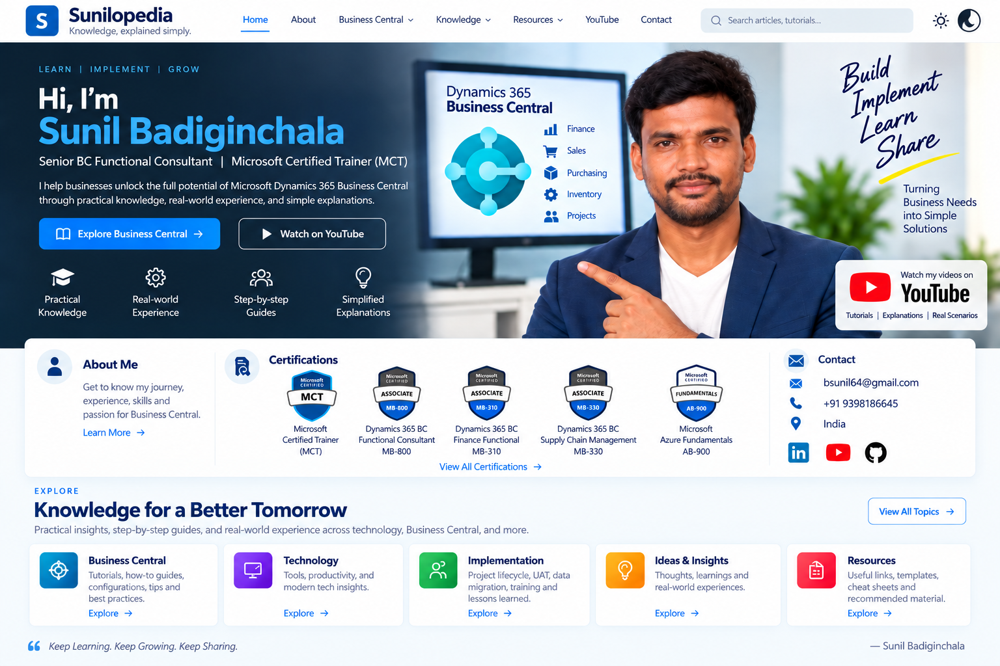

Business Central · Beginner
Getting Started with Business Central
A graduate-friendly, process-first guide to ERP, Sales-to-Cash, posting, ledgers and Functional Consulting.
Read article →
Start with something useful.
A graduate-friendly, process-first guide to ERP, Sales-to-Cash, posting, ledgers and Functional Consulting.
Read article →Clear explanations of useful tools, concepts and ideas without unnecessary jargon.
Read article →Observations and lessons gathered from projects, experiments and everyday work.
Read article →Business Central expertise, experience and learning.
Senior Business Central Functional Consultant focused on end-to-end implementations, support and solution delivery across Finance, SCM, Projects and Fixed Assets. Experienced in requirements gathering, data migration, workflows, UAT, training and business process optimization.
Contact SunilMicrosoft Certified Trainer and Microsoft certification credentials focused on Business Central, Finance, Supply Chain and related Microsoft technologies.
Practical Microsoft Dynamics 365 Business Central knowledge from real project experience.
Posting groups, dimensions, taxation, reporting, approvals and financial processes.
Explore →Procurement, inventory, sales and cross-module business processes.
Explore →Requirements, gap-fit analysis, data migration, testing, documentation and user training.
Explore →Videos and practical knowledge shared by Sunil.
Explore Sunil's videos on Business Central and related topics. The YouTube search link is kept live so the latest videos are always accessible.
Watch on YouTubeI'm Sunil Badiginchala. Sunilopedia is my personal space for turning knowledge and experience into useful, understandable content.
Get in touch